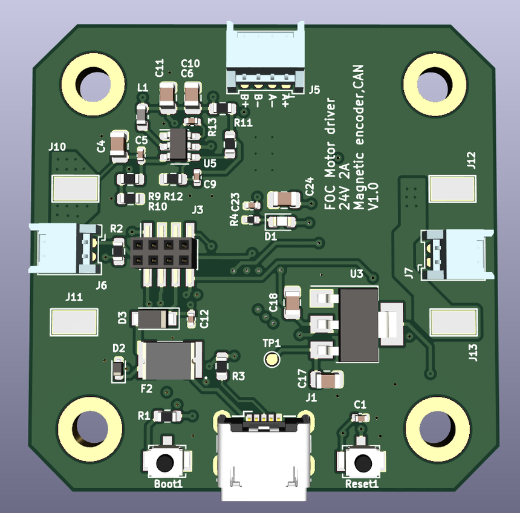

I am a Mechatronics Engineer working in electronics development, with a passion for robotics, embedded systems, and product development. My experience includes electronics design, prototyping, system testing, and the development of test setups. I enjoy understanding how systems work, solving technical challenges, and turning ideas into practical solutions. I am always interested in learning new technologies and improving my engineering skills through hands-on projects.
Custom ros2_control hardware plugin for six Feetech bus servos, so a motion planned in MoveIt 2 drives the real arm. Includes joint calibration and a real/mock launch setup.
Rocker-bogie rover with 10 Dynamixel servos. Ackermann steering and RC control on an OpenCR board first, then a ROS 2 controller with micro-ROS, wheel odometry and 2D mapping.
Parameterized multibody model of a differential-drive vacuum robot with contact and friction modelling. It matches the real robot's 19 mm obstacle limit and follows waypoints via Stateflow.

Custom four-layer driver board with STM32F103 control, DRV8844 H-bridge, magnetic encoder feedback, and CAN bus interface. Browse the live schematic and PCB below.
Furuta (rotary inverted) pendulum, modelled in Onshape and Simscape Multibody and built on hardware. A NEMA17 stepper on an STM32 Nucleo with an IHM01A1 driver turns the arm, and an AS5600 encoder reads the pendulum angle.
Self-balancing robot. An ESP32 reads the tilt from a BMI160 IMU and drives two DC motors through a TB6612FNG H-bridge, powered from a 7.6 V LiPo via an LM2596 buck converter.
Delta robot with SG90 servos and 3D printed parts, modelled in Onshape, with an animation of the three arms moving the plate.
Flange-mounted cylinder assembly modelled in Onshape, with an animated piston and rod stroke shown through a transparent barrel.
Open to conversations about embedded systems, hardware design, and robotics. Reach out directly or find me on LinkedIn / GitHub.